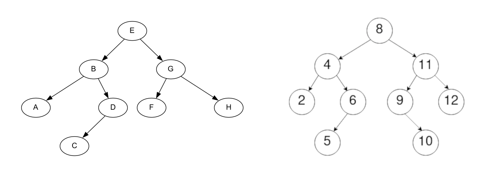

Important
Ce cours est encore en construction.
Les arbres binaires de recherche¶
Activité préliminaire¶
Sources : https://www.zonensi.fr/NSI/Terminale/C05/ABR/ et Numérique et Sciences Informatiques, 24 leçons avec exercices corrigés, Balabonski, Conchon, Filliâtre, Nguyen, Editions Ellipses.
Imaginons une bibliothèque contenant un très grand nombre de livres. Cette bibliothèque est organisée de la manière suivante :
- Il y a 17 576 pièces différentes.
- Chaque pièce est repérée par une suite de trois lettres, et dans cette pièce sont rangés tous les livres dont les titres commencent par ces trois lettres.
- Chaque pièce possède deux sorties, une à droite et une à gauche.
- La sortie de gauche mène toujours soit à une salle dont les trois lettres sont situées avant dans l'ordre alphabétique, soit nulle part.
- La sortie de droite mène toujours soit à une salle dont les trois lettres sont situées après dans l'ordre alphabétique, soit nulle part.
Une représentation de cette bibliothèque peut être donnée sous la forme d'un arbre binaire comme celui-ci :

Questions
-
Redessinez cet arbre binaire, en y ajoutant les noeuds qui correspondent aux pièces où sont situés les livres dont le titre commence par :
- KNU
- UDP
- JET
- RSA
-
Pourquoi y-a-t-il 17 576 pièces différentes ?
Cette répartition peut se révéler incroyablement efficace.
Dans le meilleur des cas, il ne faudra traverser qu'au maximum 15 salles pour trouver n'importe quel livre (si la bibliothèque est correctement organisée, quasiment chaque noeud aura 2 sorties, d'où une hauteur d'environ \(log_{2}{(17576)}\), soit environ 15).
Définition d'un arbre binaire de recherche¶
Définition : Un arbre binaire de recherche est un arbre binaire étiqueté tel que :
- les éléments sont munis d'un ordre total (on peut les comparer),
- les éléments des noeuds du sous-arbre gauche sont tous \(\leq\) à l'élément de la racine,
- les éléments des noeuds du sous-arbre droit sont tous \(>\) à l'élément de la racine,
- les sous-arbres gauches et droit sont également des ABR.

Note : Un arbre binaire vide et une feuille sont également des arbres binaires de recherche.
Notion d'arbre équilibré¶
Une autre notion qui va nous être utile est la notion d'arbre équilibré.
Définition : Un arbre équilibré est un arbre pour lequel, pour tout nœud de l'arbre, la différence entre les hauteurs de ses deux sous-arbres est au plus de 1.

- L'arbre A est un arbre complet, et donc équilibré car pour tout nœud de l'arbre, les deux sous-arbres ont au plus une différence de hauteur de 1.
- L'arbre B est un arbre filiforme et donc complètement déséquilibré. Un tel arbre s'apparente à une liste chaînée.
Recherche dans un arbre binaire de recherche¶
Algorithme (à connaître par cœur !)¶
À noter dans votre cours
Voici l'algorithme récursif, en pseudo-code, de la recherche dans un arbre binaire de recherche.
Recherche dans un arbre binaire de recherche
ALGO : rechercher
ENTREES : abr : Arbre binaire de recherche
elt : Element
SORTIE : Booléen
DEBUT
Si abr EST VIDE, alors :
Renvoyer FAUX
Sinon si valeur_racine(abr) = elt, alors :
Renvoyer VRAI
Sinon si elt <= valeur_racine(abr), alors :
Renvoyer rechercher(gauche(abr), elt)
Sinon :
Renvoyer rechercher(droite(abr), elt)
FIN
Contrairement à la recherche dans un arbre binaire classique, on n'effectue pas la recherche dans les deux sous-arbres. En fonction de l'élément recherché, on effectue la recherche soit dans le sous-arbre gauche (si l'élément est inférieur ou égal à la valeur de la racine), soit dans le sous-arbre droit (si l'élément est supérieur à la valeur de la racine).
Coût de la recherche¶
Le coût de la recherche dépend du fait que l'arbre soit équilibré ou non. Si l'on reprend les arbres précédents :
- Dans l'arbre B, tous les noeuds sont du même côté. Si l'on recherche le nombre 25 dans l'arbre (qui n'est pas présent dedans), on va toujours rechercher dans le sous-arbre gauche. Si l'on note \(n\) le nombre de nœuds de l'arbre, Le nombre d'appels récursifs à
recherchersera de l'ordre de \(n\). - Dans l'arbre A, les nœuds sont répartis à peu près équitablement entre les sous-arbres gauches et droit. À chaque nouvel appel récursif, on ne recherche que dans un des deux sous-arbres, et on peut donc éliminer à chaque fois environ la moitié des nœuds. Si l'on note \(A(n)\) le nombre d'appels à
rechercheren fonction de la taille \(n\) de l'arbre, on peut écrire \(A(n) = 1 + A(\frac{n}{2}) = 1 + 1 + A(\frac{n}{4}) = [...] \approx log_2(n)\).
À noter dans votre cours
Finalement, le coût de la recherche dans un arbre binaire de recherche est le suivant :
- Si l'arbre est équilibré, le coût de la recherche est en \(O(log_2(n))\),
- Si l'arbre est complètement déséquilibré (arbre filiforme), le coût de la recherche est en \(O(n)\).
Pour vous entraîner
Voir l'exercice 4 et sa correction pour vous entraîner sur cette notion.
Insertion dans un arbre binaire de recherche¶
Algorithme (à connaître par cœur !)¶
À noter dans votre cours
Voici l'algorithme récursif, en pseudo-code, de l'insertion dans un arbre binaire de recherche.
Insertion dans un arbre binaire de recherche
ALGO : inserer
ENTREES : abr : Arbre binaire de recherche
elt : Element
SORTIE : Arbre binaire de recherche
DEBUT
SI abr EST VIDE, alors :
Renvoyer nouvel_ABR(elt, ABR_VIDE, ABR_VIDE)
SINON SI elt <= valeur_racine(abr), alors:
Renvoyer nouvel_ABR(valeur_racine(abr), inserer(gauche(abr), elt), droite(abr))
SINON :
Renvoyer nouvel_ABR(valeur_racine(abr), gauche(abr), inserer(droite(abr), elt))
FIN
Coût de la recherche¶
Le coût algorithmique de l'insertion dans un arbre binaire de recherche est identique au coût de la recherche. En effet, le principe est toujours le même :
- Si l'élément à insérer est inférieur ou égal à la racine, on insère l'élément dans le sous-arbre gauche.
- Si l'élément à insérer est supérieur à la racine, on insère l'élément dans le sous-arbre droit.
Ainsi, si l'arbre est équilibré, on divise environ par deux le nombre de nœuds à chaque appel récursif, et le coût est logarithmique au pire (si l'élément à insérer se positionne en profondeur maximale). Dans le cas où l'arbre est complètement déséquilibré (arbre filiforme), on doit, au pire, visiter chaque nœud pour insérer un élément, et on obtient donc un coût linéaire au pire, comme dans le cas d'une liste chaînée.
À noter dans votre cours
Le coût algorithmique de l'insertion dans un arbre binaire de recherche est le suivant :
- Si l'arbre est équilibré, le coût de l'insertion est en \(O(log_2(n))\),
- Si l'arbre est complètement déséquilibré (arbre filiforme), le coût de l'insertion est en \(O(n)\).
Pour vous entraîner
Voir l'exercice 5 et sa correction pour vous entraîner sur cette notion.